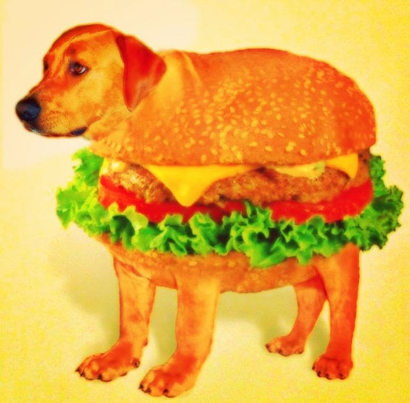
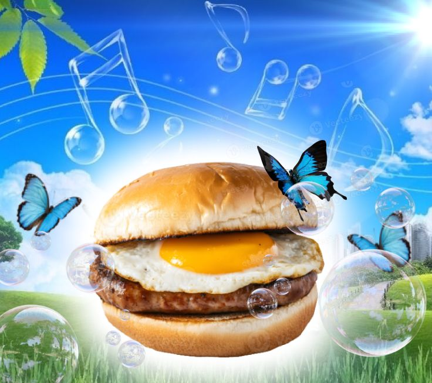
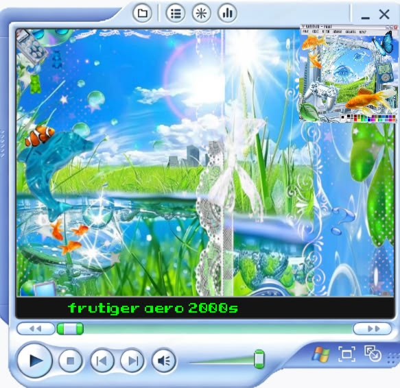

Frutiger Aero & jQuery 互動
Frutiger Aero 是 2000 年代中期流行的復古未來風，以天空藍、草地綠、水泡泡與玻璃光澤營造清爽樂觀的氛圍。本範例結合 jQuery 的漢堡選單與頁籤切換，讓使用者點擊果凍按鈕就能看見內容滑順淡入，體驗 HTML、CSS 與 JavaScript 協作的魅力。

Style features
透明玻璃、水珠泡泡、漸層高光與圓潤邊角，是果凍質感的四大關鍵，讓畫面彷彿能輕輕按下去。

When to use
1. 想帶來清新、療癒的形象
2. 需要懷舊又現代的視覺效果
3. 主題與自然、科技相關